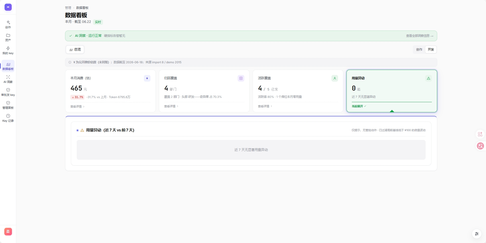

权限、配额、审批、资产统一进入产品规则
AI Product Portfolio / Internal AI Platform
AI 产品化能力：企业 AI 中台从 Demo 到可交付系统。
这是一个面向企业内部的 AI 图像/视频生成中台原型。项目重点不是“接上模型能生成”，而是把 AI 能力包装成可治理、可协作、可验证、可持续迭代的企业系统。
核心定位
我理解 AI 产品的核心不只是模型效果，而是权限、配额、审批、资产、数据看板、验证脚本和协作规范共同构成的产品化能力。
Smoke Harness
Multi-agent Workflow
Design System
Governance
Productization
从单点生成工具到企业级 AI 能力平台
公司内部 AI 中台覆盖生成、资产、会话、模板、审批、配额和用量看板。设计重点是让模型调用进入企业治理框架，而不是只提供一个生成按钮。
核心链路、权限隔离、成本扣减可回归
用 token 和组件范式约束 AI 生成漂移
决策、施工、核验和人工确认分工
核心问题
生成不可控不同用户生成质量不稳定，结果需要可追溯。
协作易漂移多人、多 AI 协作者参与后，UI 和逻辑容易不一致。
验收不充分只看页面无法证明核心路径、权限边界和成本扣减可用。
治理要求高企业场景需要权限、配额、审批、用量统计和资产管理。

实际项目截图：AI 中台数据看板 / 洞察与用量治理。
Platform Map
AI 能力进入企业系统的 5 个关键层
平台把模型能力拆成入口权限、生成任务、资产沉淀、治理规则和数据反馈，让 AI 不只是一次性生成，而是能被组织持续使用。
01 / Validation
把“Demo 能用”变成“核心链路可验收”
项目定义 smoke harness，模拟不同用户和关键业务路径，把登录、生成、轮询、权限隔离、收藏、模板 cap、配额审批等链路纳入回归验证。
Smoke Harness 覆盖点
生成链路生成后轮询任务状态，确认结果文件、历史记录和积分扣减。
权限边界用不同用户身份验证 admin 权限和跨用户隔离。
异常归因失败后区分测试漂移、数据污染或真实回归，避免误判。
交付价值
验证机制本身就是 AI 产品交付的一部分，它把“看起来能用”变成“关键路径可被反复证明”。
02 / Collaboration
把 AI 协作从随机生成变成分工流程
项目没有硬包装运行时多 Agent 框架，而是落地 workflow multi-agent 思想：用不同 AI 协作者承担决策、施工、核验等责任。
协作分工
决策
施工
核验
确认
决策 session写 spec、验收剧本和不可改契约。
施工 agent根据 spec 实现，信息缺失时停止并提问。
核验 agent使用 fresh context，只看 spec 和 diff 反向找问题。
Owner 确认真实模型调用、生产数据库和部署动作保留人工确认权。
降低的风险
Before随机生成
AI 直接产出页面，需求误读和风格漂移难以及时发现。
After分工流程
决策、施工、核验拆开，每一步都有明确产物和确认点。
03 / Design System
用设计约束防止 AI 生成页面风格漂移
AI 生成原型速度很快，但多人和多 Agent 参与后，最容易出现每个页面一种风格。项目用 UI token、组件范式和协作审计约束一致性。
约束方式
组件复用按钮、卡片、表单、弹窗优先复用既有 class 和参考组件。
Token 管理颜色、圆角、间距走变量或 token，减少随手硬编码。
变更前置新增模块前明确路由、API、数据契约、migration 编号和 UI 风格锚点。
系统收益
生成速度越快，设计系统和协作规范越重要，否则项目会快速变成风格碎片化的页面集合。
Outcome
交付成果：可用、可控、可协作
这部分最终证明：AI 产品经理需要把模型能力变成系统能力，把 Demo 变成能继续被研发、运营和管理者使用的产品。
可用
核心生成链路、资产沉淀、审批与配额治理能形成可演示原型。
可控
权限、配额、成本、历史记录和数据看板让模型调用进入治理框架。
可协作
通过 spec 契约、协作规范和设计系统，让多人和 AI 协作者保持一致。